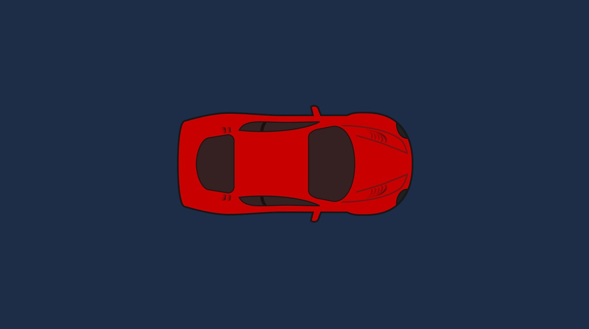

Sprites
image Sprites are 2D images used in a 2D context. They are simulated in Evergine as quad oriented to the camera. The Sprites are batched automatically for the SpriteBatch allowing drawing a huge amount of sprites with a single drawcall.
The Sprite could be useful to create special UI elements over your 3D scene as a compass, or indicators.
The Sprites are not available from de Evergine Studio by now so if you want to create a sprite you need to create it from code.
Create Sprite from Code
The Sprite is an entity with the components Sprite and SpriteRenderer. To draw a Sprite is necessary to create a Camera2D. A Camera3D and a Camera2D can be combined in a scene to draw the 3d objects layer and 2d objects as a new layer over the 3D. In the following example are created a Camera2D and a Sprite.
protected override void CreateScene()
{
var assetsService = Application.Current.Container.Resolve<AssetsService>();
// Load default texture
Texture texture = assetsService.Load<Texture>(EvergineContent.Textures.car_png);
// Load default sampler
SamplerState linearClampSampler = assetsService.Load<SamplerState>(EvergineContent.Samplers.LinearClampSampler);
// Load a Render Layer description...
RenderLayerDescription layer = assetsService.Load<RenderLayerDescription>(EvergineContent.RenderLayers.Alpha);
// Add Sprite
var sprite = new Entity()
.AddComponent(new Transform2D()
{
Origin = Vector2.One * 0.5f, // Center pivot
})
.AddComponent(new Sprite()
{
Texture = texture,
Sampler = linearClampSampler,
})
.AddComponent(new SpriteRenderer()
{
Layer = layer
});
this.Managers.EntityManager.Add(sprite);
// Add Camera
var camera2d = new Entity("Camera")
.AddComponent(new Transform2D())
.AddComponent(new Camera2D()
{
BackgroundColor = Color.CornflowerBlue * 0.3f,
});
this.Managers.EntityManager.Add(camera2d);
}
The result: 